《How to AI (Almost) Anything》Lecture 2：数据、结构、信息
⚡一分钟速览▼
这集讲啥：整堂课的主题是 data（数据）。Paul Liang 说数据是当今机器学习与 AI 最重要的原料。他先逐个展示常见的数据"模态"（modality，即数据被感知/表达的方式），再把它们提炼成一个统一的「模态画像」框架，最后讲清楚拿到数据后怎么"学"（各种学习范式）以及怎么判断学得好不好（过拟合 vs 泛化）。
为什么重要：大多数课一上来就讲模型。这集刻意先讲数据——因为模型选得再花哨，数据没想清楚也白搭。"先想数据、再选模型"是这门课贯穿始终的态度，也是做课程项目挑数据集时最实用的一把尺子。
学完你手里会多出三样东西：
一句话主线：数据从原始（贴近传感器、高维噪声）一路被抽象成有用特征 → 任何模态都用同一套「画像」去拆解（元素 / 粒度 / 结构 / 信息 / 噪声）→ 配上合适的学习范式 → 用"能不能泛化到未来数据"来检验。整集就是把"如何思考数据"讲透。
01这集讲什么 + 课程逻辑（Piazza / 日历 / 项目）▼
00:00本集路线图
Paul 开场点题：今天是 Lecture 2，主题是数据、结构与学习。"数据是当今机器学习和 AI 里最重要的原料。"这堂课会：① 过一遍各种数据形态（视觉、语言、听觉、传感、集合、图）；② 把这些形态抽象成一个统一框架，讨论"什么让一种数据独一无二"、它有哪些属性、该为它设计什么样的模型；③ 用真实数据集举例，并讲标签（labels）——你常常拿到的是原始数据，想学出特征好去打标签或做推断；④ 为做这些推断，介绍各种标签类型和学习范式。
01:00课程逻辑：Piazza、日历、项目表
进入正题前先讲一堆事务：所有人都应被加进 Piazza（课程公告、幻灯片、日历、提纲都发在那）；今天截止的是项目偏好表（project preferences form）——填名字、已有/想找的队友、感兴趣的项目方向；下周三（Week 3）周一周二课表对调（总统日），下周二不上课，所以要把内容重排塞进其他课时。
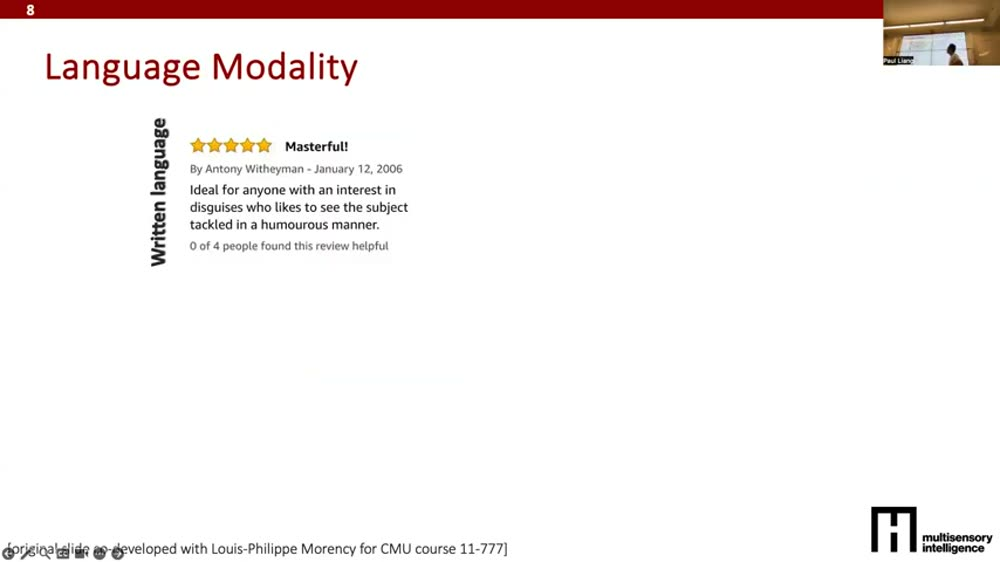
英文逐字稿（00:00–05:30）
02数据是核心原料：从原始到抽象的层级▼
05:30把数据看成"某个感官模态"
正式进入今天的内容。Paul 说：在机器学习里我们总在谈数据，数据是任何成果的关键。要把数据想成属于某种感官模态（sensory modality）——也就是数据在世界里被表达或被感知的某种方式。每种数据背后通常都有个传感器在采集它。
06:00原始 → 抽象：一条信息的"提纯"链
关键直觉：数据可以从"原始（贴近传感器）"排到"抽象（远离传感器）"。
- 原始数据：麦克风直接录的语音信号、相机直接拍的图像。
- 第一层抽象：从语音里抽出"说了哪些词"（语言）；从图像里检测出"有哪些物体、在什么位置"——保留一部分信息、扔掉另一部分，这就是抽象。
- 更抽象：从语言里判断说话人的情绪（正面/负面）；从检测到的物体里推出精确的物体类别。
这就是机器学习/AI 的本质：把高维、噪声大、脏的原始数据，学成对你关心的任务有用的抽象，再在抽象上做推断。整门课就是在回答两件事：世界上有哪些数据形态，以及怎么把它们学成有用的抽象。
英文逐字稿（05:30–07:30）
03视觉模态：像素张量 → 物体分类▼
07:30图像在计算机里长什么样
每种模态都得在计算机里"表示"出来。一张彩色图像通常表示成三维矩阵：高 × 宽 × 通道（channels 就是 RGB 等颜色数）。
08:00能做的推断
从图像可以做：二分类（有没有狗）、多分类（在一大堆类别里选对的那个）。这是视觉数据和它典型推断任务的例子。
记住这个套路：每讲一种模态，Paul 都问同两件事——"它在计算机里怎么表示？"和"能在它上面做哪些推断/任务？"后面每种模态都照这个模板走。
英文逐字稿（07:30–08:30）
04语言模态：bag-of-words 的好与坏▼
08:30文字怎么变成数字：词袋（bag-of-words）
语言数据网上到处都是：写的（亚马逊评论）、说的（电影/电视里的对白）。但"humorous"这种字符串，机器没法直接吃。最简单的表示法是词袋（bag-of-words）：先收集一本"词典"列出所有出现过的词，再用一个0/1 向量标记——某个词出现就在它对应的位置放 1，其余全放 0。向量长度 = 词典里词的数量。
09:00能做的推断 + 词袋的硬伤
有了向量就能分类：情绪正负、词性（名词/动词/形容词）、命名实体（是不是某地点/某物体）。现在我们不训练词级模型，而是句子/段落级：判断整段评论是正面还是负面，甚至自动生成一段回复。
词袋的硬伤：只数"哪些词出现"，不管词的顺序。"not happy"（不开心）和"happy …… not（在别处）"含义天差地别，词袋分不出来。这正是后面要用更好的表示法（序列模型、Transformer）的动机。
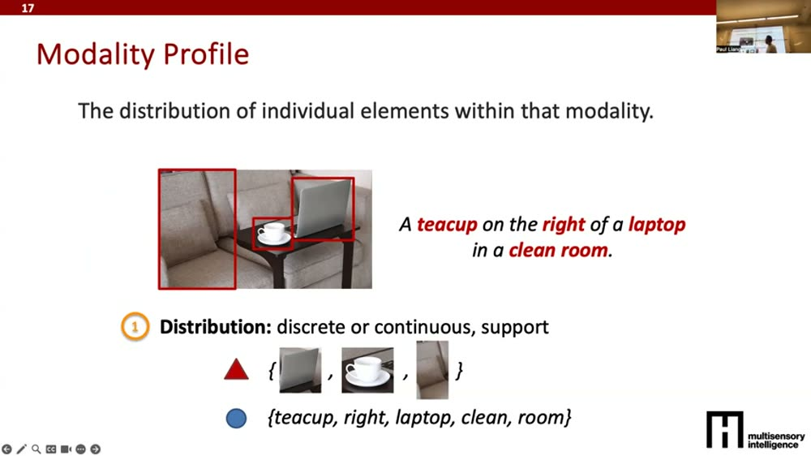
英文逐字稿（08:30–11:30）
05音频模态：采样率、时间窗、频谱图▼
11:00声音是被"离散化"的连续信号
麦克风从世界里的连续声音里，按固定频率采样，得到离散的声学信号。从这个信号能做自动语音识别（ASR）。几个关键参数：
- 采样率（sampling rate）：多频繁地录一个样本。
- 位深（bit depth）：每个样本记录多少信息。
- 时间窗（time window）：在多长的窗里去识别一个词。窗太短→只听到一个音素/字符；窗太长→把不止一个词都混进来，模型不够精确。
12:00频谱图：把音频当成图像
音频可以用频谱图（spectrogram）表示——把时间维转成"频率 + 幅度"。神奇的是：可以把频谱图当成一张图像，直接喂给图像识别模型去推断。这揭示了音频和视觉模态之间的关联。除了识别说了什么词，还能识别情绪（不只看说了啥，还看怎么说的——音量大小、语速快慢、音质）。
关键彩蛋：模态之间会"互相借力"。频谱图能当图像处理，说明同一套模型/直觉有时能跨模态复用——这是后半节"迁移 / 跨模态学习"的伏笔。（注：这一段视频里没有单独的清晰幻灯片，故不配图。）
英文逐字稿（11:00–12:30）
06传感 / 时间序列模态：多了一个"时间"轴▼
12:30机器人传感器：力-力矩 + 本体感觉
做机器人或环境传感时，常常跨时间测量某个物理现象。例子：六轴力-力矩传感器（force-torque sensor）——跨时间测量，每个维度是六个力分量之一，形状像 T × 6。机器人还常有本体感觉（proprioception）数据：测量系统内部状态，比如机械臂当前位置、关节角度、速度，形状像 T × 2。
14:00能做的推断：感知 + 行动
拿这些传感数据训模型，可以输出：抓的是什么物体、物体属性（软/硬/刚性/形状）、以及下一步该采取什么动作。动作执行后又会产生新一时刻的读数——形成"感知→行动→新读数"的循环。
15:00"传感"≈"时间序列"
核心特征：多了一个时间维，你会想把它画出来看。"sensor"和"time series"常被混用：time series 是 sensor 的推广——任何带时间维的都算时间序列（比如股价随时间变化是时间序列，但不算传感数据）。找模型时这两类关键词都可以搜。
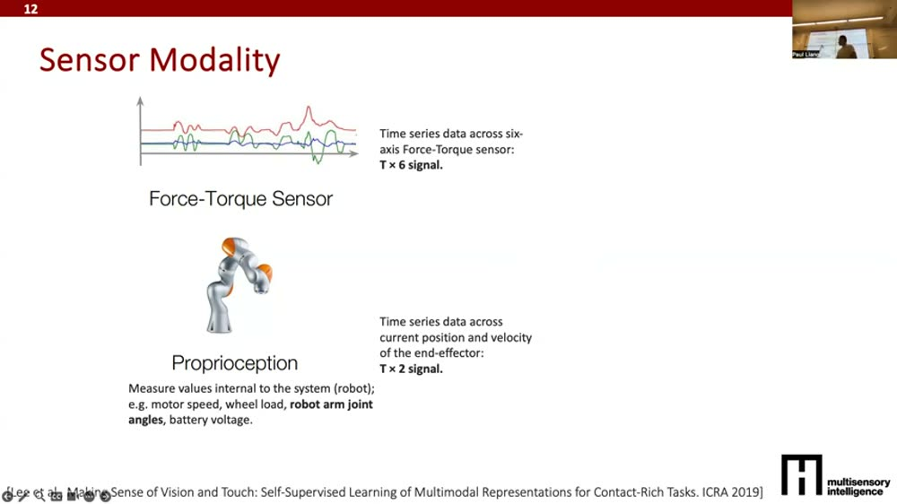
英文逐字稿（12:30–15:30）
07表格模态：顺序无关、值偏离散▼
15:30MIMIC 医疗数据：表格 + 时间序列混合
医疗常用的 MIMIC 数据集同时有两种模态：表格信息（患者年龄、性别、种族、既往病史）+ 时间序列（进 ICU 后到出院期间的通气、心率、血糖随时间变化）。两者合起来可推断死亡率、疾病（ICD9 编码）、住院时长等。
16:30表格数据的两个独特性质
- 列顺序无关：先放年龄还是先放性别，本质上不该改变模型对数据的理解。如果你的模型对列的排列顺序敏感，就有麻烦。
- 值偏离散：性别、种族往往是几个"桶"，不像图像/传感那样是连续数据。这给建模带来独特挑战。
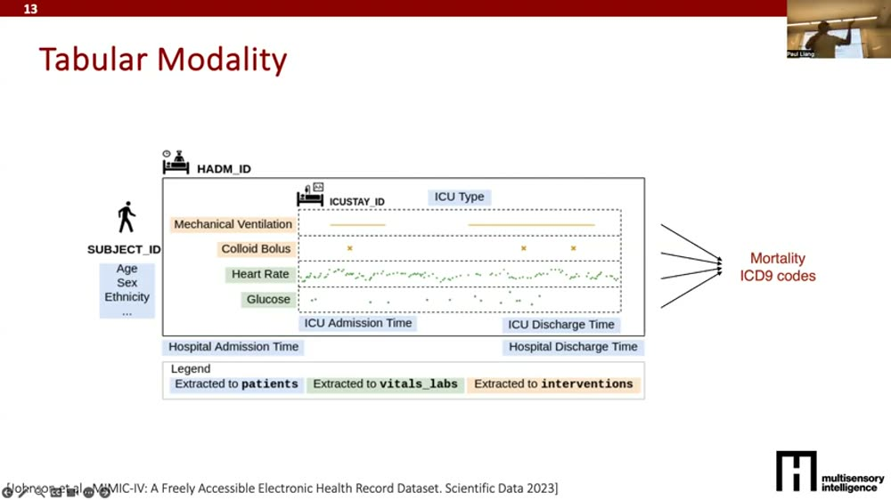
英文逐字稿（15:30–17:00）
08图模态：节点 + 边，关系本身就是数据▼
17:00图无处不在
社交网络、经济网络、生物医学网络（蛋白质如何相互作用）、互联网……都是图。图由节点（nodes，图里的点）和边（edges，告诉你哪些节点相连）组成。关键直觉：不能只看单个节点，得看它和别人的关系。
17:30图上的核心任务
- 节点分类：判断每个节点的某种属性（社交网络里某人偏正/偏负、政治倾向）——但要靠他的好友、点过的页面一起推断。
- 链接预测：给两个节点，预测它们相连的概率（两个蛋白质会不会结合、两个人会不会成为好友）。
- 把图当知识库用：早期问答系统（如 IBM Watson 玩 Jeopardy）靠查询知识图谱取答案；现在常做大语言模型 + 知识图谱的混合（让 LLM 去查询/检索图里的显式知识）。
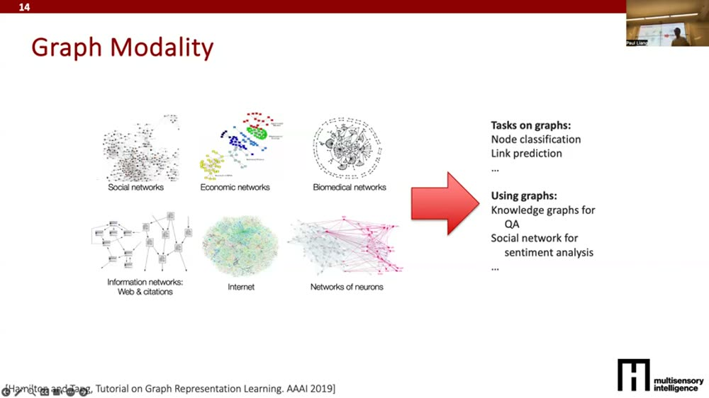
英文逐字稿（17:00–19:30）
09集合 / 点云模态：顺序不重要▼
19:30集合：和表格像，但更强调"无序"
集合模态和表格有共性——哪些元素在集合里很重要，但元素的顺序不重要。例子：一堆名人头像，要分类发色/肤色/年龄等属性，但谁排第一谁排第二无关紧要。如果模型对图像出现的顺序敏感，它就不如一个对顺序不敏感的模型。能做的任务：异常检测（哪张不属于这个集合）、集合扩展（按某属性多采样几个）。
20:30点云：3D 版的集合
2D 图像有高和宽；点云（point clouds）是 3D 版——每个点是 xyz，一堆点（cloud）合起来重建/可视化 3D 物体，点的顺序同样不重要。任务：点云扩展（采样不同朝向的椅子）、分类、异常检测。
集合/点云的铁律：顺序不该影响结果。如果你建了个对集合元素顺序、或点云里点的顺序敏感的模型，就等于没充分利用数据，效果会变差。（这个"对顺序的处理方式"正是 S10 里"结构"维度要回答的问题。）
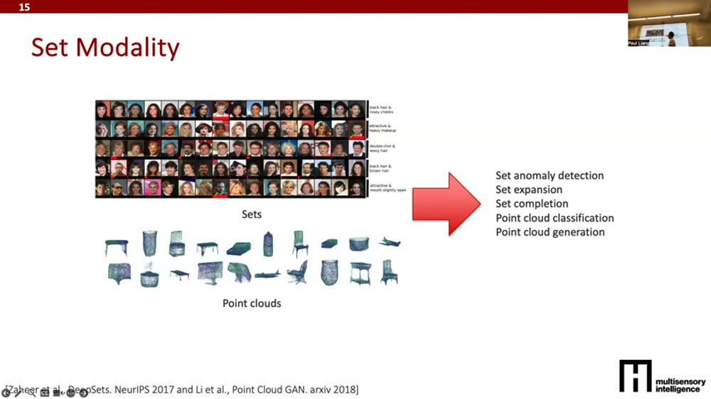
英文逐字稿（19:30–22:00）
10模态画像：一张套遍所有数据的"五维清单"▼
22:00统一框架：modality profile
过完所有模态后，Paul 抛出他的统一框架——模态画像（modality profile）：拿到任意来源、任意模态的数据，都值得从几个维度去想"这种模态独有的品质和结构"。他用两个相关的例子来讲：一张图片 + 它的描述句"一个茶杯在笔记本电脑右边、在一个干净的房间里"。
23:00维度①：分布（distribution）
先看数据里单个元素的分布。图像里：沙发、钥匙、笔记本、桌子各是一个元素；语言里：的/在/这些停用词不重要，茶杯/笔记本/干净房间这些关键词才要建模。要想清楚这些元素是连续还是离散、它们的支撑集（support，所有可能的元素）是什么（图像里是 bounding box 区域，语言里是词）。核心问题：怎么给每个元素学一个好表示（哪怕笔记本被茶杯部分遮挡也认得出）。
23:30维度②：粒度（granularity）
元素出现得多频繁？一张图也许就三四个主要物体；一段话有多少词（每分钟多少词）。粒度会影响你后面怎么把"单个元素的表示"组合起来。
24:00维度③：结构（structure）
元素如何组合成更高层的信息。图像往往是空间结构（茶杯在桌上、笔记本在茶杯左边）；语言则有两派看法——一派认为该按语法层级组合（很 Chomsky 的思路，先认名词再往上拼），但经验上直接当序列喂给 Transformer/LLM 往往效果最好。图/树则各有自己的组合结构。你该照着数据的结构去设计模型。
27:30维度④：信息（information）& 维度⑤：噪声（noise）
信息：组合成高层表示后，这个模态提供多少信息、能做哪些推断？不同模态信息量不同，且会互相重叠。噪声：这个维度大家常忽略但很重要——从传感器采来的模态总是不完美的：相机有抖动/遮挡，打字有错别字，说话有口误。每种模态都有它独特的噪声模式，要提前想清楚。
整集的"压箱底工具"就是这五维清单。拿到任何数据集，依次问：① 元素是什么、什么分布；② 出现多密（粒度）；③ 怎么组合成结构（空间/层级/序列）；④ 含多少信息、和别的模态重不重叠；⑤ 有什么噪声。（外加一条：它和你要预测的任务有多相关。）
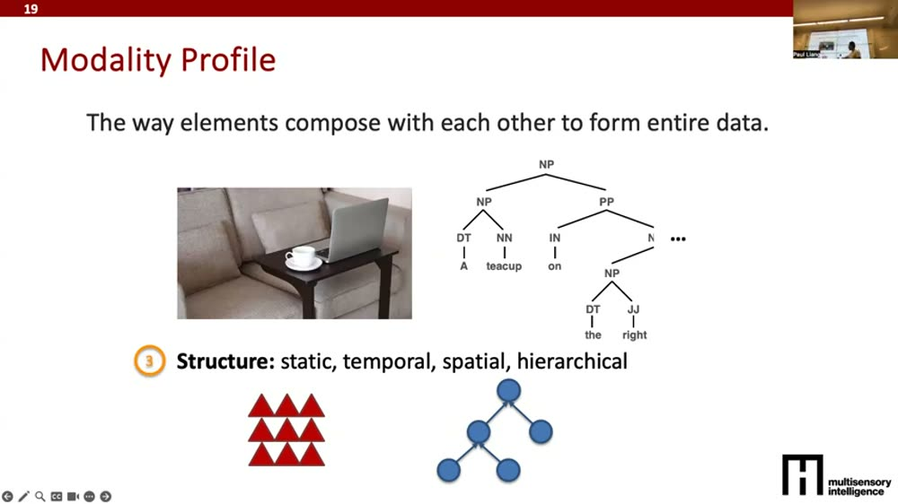
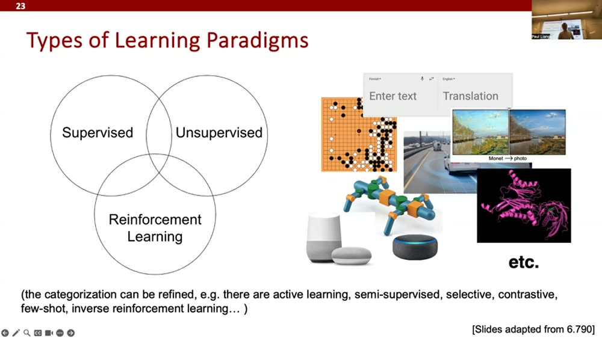
英文逐字稿（22:00–31:00）
11三大学习范式：监督 / 无监督 / 强化▼
31:30有了数据，怎么"学"
高层看有三类学习范式（非穷尽、彼此重叠、还在不断扩展）：
- 监督学习（supervised）：有标签 Y。数据 X 进来，配上你想预测的标签——图像配物体类别、蛋白质配相互作用、一句西班牙语配它的英文翻译。你愿意提供这份监督。
- 无监督学习（unsupervised）：没标签。因为标注太贵 / 太费人力 / 太主观（如情绪）。只有 X，希望学出一些日后有用的特征。例子：降维可视化（不需标签）、训练生成模型（估计数据分布、生成更多样本，如生成新蛋白质 / 新图像）。
- 自监督学习（self-supervised）：监督和无监督的交叉——海量无标签数据，但在无标签数据上自定义训练目标学出特征，再迁移/微调到少量有标签的监督任务。例子：学会生成狗的图像，学到的特征对识别狗也很有用。
35:00强化学习：跨多步、要权衡长期回报
监督/无监督多是单步（预测完就结束）。强化学习（RL）处理多步问题：下棋/围棋有"状态→动作→新状态"的循环，直到赢棋。最大的挑战：不能只在每一步贪心选最优，有时要牺牲短期、换长期更优。RL 见于游戏、机器人，以及现在的大语言模型——把人和 LLM 的多轮对话看成多步交互，目标是最大化长期回报。
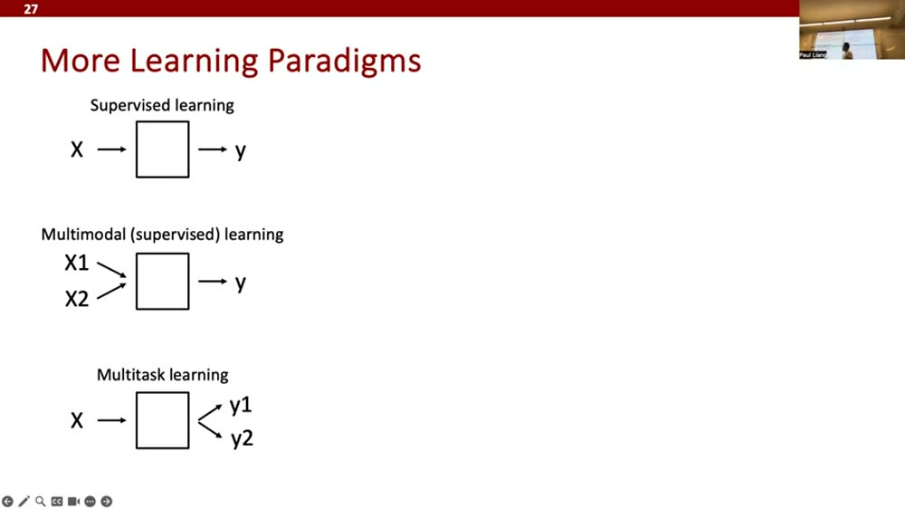
英文逐字稿（31:30–36:00）
12更多学习范式：多模态 / 多任务 / 迁移 / 跨模态 / 自监督预训练▼
36:30它们对"你需要什么数据"提出不同要求
Paul 强调：这些范式对挑课程项目数据集很有用——看你能拿到什么样配对的数据，决定能用哪种学习方式。
- 监督：X→Y，需要成对的有标签数据（X 和 Y）。
- 多模态学习：多个 X（X1、X2 各提供互补信息）→ Y。信息更多，但需要 (X1, X2, Y) 配齐的数据，往往更难收集、量更少。
- 多任务学习：X → 同时预测 Y1 和 Y2，利用两个任务互补（如同时预测情绪和压力）。做得好会非常好；代价是需要 (X, Y1, Y2) 都齐的数据。
- 迁移学习：分两阶段——先用 (X, Y1) 训一个模型，再把它迁移到第二个任务继续训 (X, Y2)。特别适合 Y1、Y2 数据量不对称的情况（先用海量自然图像训练，再迁移到稀少的医学图像）。
- 跨模态学习（cross-modal）：迁移到不同输入模态。神奇之处：语言上训的 LLM 能迁移到代码、数学、蛋白质结构、基因序列，甚至机器人状态/动作、游戏状态——能迁移到一大堆东西。
- 自监督预训练：迁移学习的延伸，第一步不用任何标签——做 X→X′（X′ 是你自动造出来的"自监督标签"）：用图左半预测右半、拼图、自回归预测下一个词、给图加噪再去噪/旋转再转回……只要 X 和 X′ 之间有能自动构造的关系，就能拿到近乎无限的训练对，学出很强的特征再迁移到任务 Y。
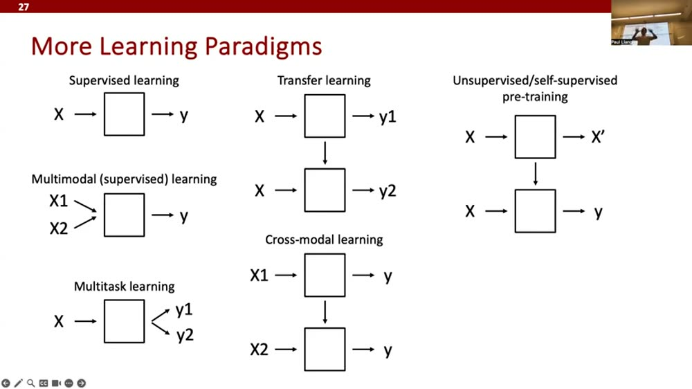
英文逐字稿（36:30–42:00）
13交互式学习范式：RL / LLM 适配 / 课程 / 主动 / 人在环▼
45:00从"只做预测"到"会交互"
前面多是非交互的（做完预测就结束）。交互式范式让模型"动起来"：
- 强化学习（RL）：状态进来→多个动作、多个状态→最终拿到奖励，目标是最大化长期回报。
- LLM 适配：把原本输出类别/数字的监督模型，改造成能用语言输出——这样就能追问（"是哪种猫？"）、甚至让模型解释它为什么判成猫（四条腿、不同颜色……）。代价：怎么不胡说（hallucination）仍是难题。
- 课程学习（curriculum）：像学生一样先学简单任务、再上难任务。直接上最难的任务模型会很烂；怎么排课程是开放问题。
- 主动学习（active）：模型先在简单数据上预测，再根据当前状态去搜更难的数据/任务来攻。
- 人在环学习（human-in-the-loop）：在 X→预测之间塞入人类反馈，迭代多轮直到满意；之后还可以训一个模型去模仿人类怎么给反馈，从而自动化。
课堂问答两则（值得记）：① 关于"LLM 算不算 RL"——你可以把每个词当一步、整段回答当一个多步问题；奖励来自人类对输出好坏的评分（RLHF 就靠这些人类监督）。② 关于自监督后怎么用——通常保留大部分预训练块，再训个独立的线性分类头、或微调末几层、或用 LoRA（低秩适配），不必重训整个大模型。
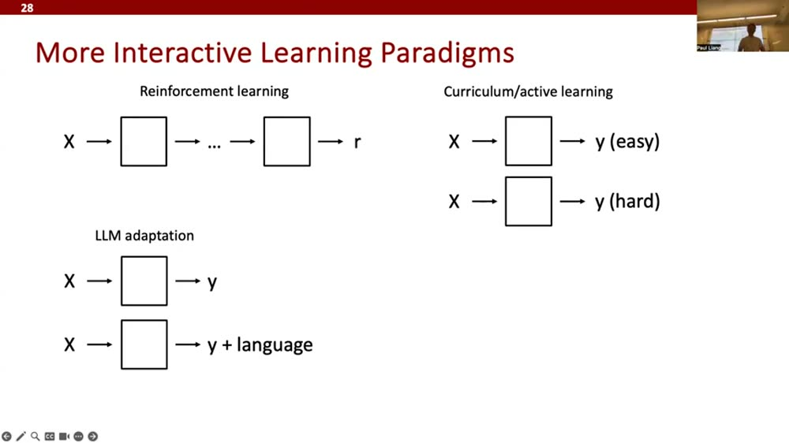
英文逐字稿（45:00–48:00，含 Q&A）
14过拟合 vs 泛化：真正的目标是未来的数据▼
48:00学习 = 在一类模型里找关系
机器学习的整个目标，是找一个好模型去学数据里的关系/特征。你先选定一类模型（神经网络、LLM、线性函数、决策树……），用带标签的 (X, Y) 数据去学一个函数 X → F/H → Y。模型表现好不好，很大程度取决于你怎么选模型类、怎么定参数。
49:00过拟合 vs 欠拟合 vs 泛化
但在钻进模型本身之前，得先问：怎么判断一个模型好不好？核心问题是过拟合 vs 泛化——真正的目标是泛化到未来的数据（明天拍的新照片、一年后和 LLM 的新对话都要做得好）。
- 欠拟合（underfitting）：模型连训练数据里的关系都没学到。
- 过拟合（overfitting）：模型把训练数据"背"得太死（那条扭来扭去的蓝线），没抓住平滑的真实关系，部署到测试数据上就崩。
50:30train / validation / test 三分
实践中把数据分成训练 / 验证 / 测试：训练集上训模型、验证集上调超参、测试集上衡量——测试集是"未来真实数据"的替身。关键：测试数据的条件要尽量贴近真实部署的条件。
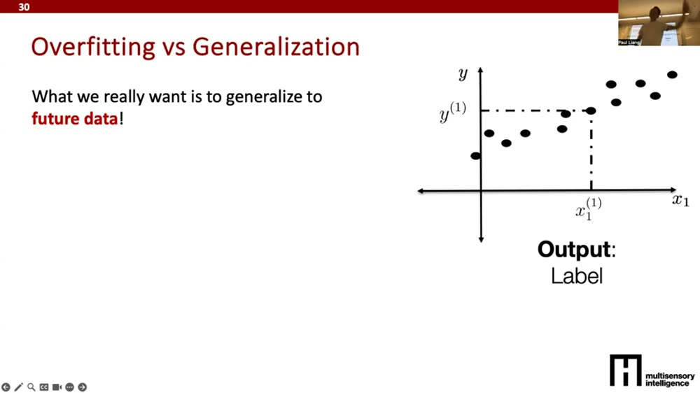
英文逐字稿（48:00–50:30）
15How To Data：动手建模前必做的四步▼
51:00每集都以"How to 某件事"收尾，今天是 How To Data
Paul 说他每节课都会以一张"How to …"清单结尾。今天的主题是数据，所以是 How To Data——而且这四步必须先于选模型做：
- 决定收多少数据、标多少。权衡收集成本、雇人标注的人力/金钱/时间成本。
- 清洗数据。归一化/标准化把一切压进合理范围，找出噪声数据、检测离群点/异常（有现成工具包）。
- 可视化数据。很多人做得不够——一定要画出来！1D 直接散点看是不是线性关系；高维就用降维（PCA、t-SNE）看数据是否真的落进你想预测的那些簇。
- 定评估指标。平方误差（连续预测）/ 分类错误率 / 用户研究 / 可用性测试。还要分代理指标（proxy）和真实指标（real）——真实指标常是"人将来怎么用"，但建模时不想总拉真人来迭代，就用代理指标近似；同时兼顾定量与定性。
顺序很重要：1→2→3→4 全做完，才轮到选模型类、定学习算法、做真正的机器学习。这正是整门课"先想数据、再选模型"态度的落地清单。
本集小结（Paul 的收尾）：看了几种常见数据模态 → 给了一个统一的「画像」框架去想数据的各个维度 → 过了数据/标签/学习目标的类型 → 讲了过拟合/欠拟合与泛化的挑战。作业：本周暂无阅读；今天前填项目偏好表；没队友的去 mingle；下周四做项目提案展示（每队约 5 分钟）；本周四有 PyTorch / Hugging Face 工具教程。
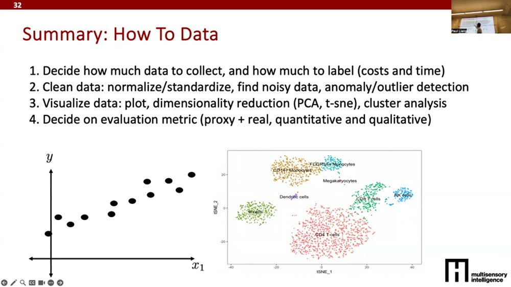
英文逐字稿（51:00–54:14）
🧠费曼重讲：用大白话从头讲一遍▼
1. 先问一句：这节课到底在教什么？
大多数人学 AI，第一反应是"我要学什么模型"。这节课偏不——它说：慢着，先把你手里的"原料"看清楚。做菜你得先认得清是肉是菜、新不新鲜、要不要洗，才谈得上选什么锅、用什么火。数据就是 AI 的原料，模型才是锅。原料没想明白，锅再贵也炒不出好菜。
2. 数据是怎么"提纯"的：从原汁到精华
想象一条提纯流水线。最左边是原始数据：麦克风录下的一整段嘈杂声音、相机拍下的一整张图——又大、又乱、又脏。往右走一步，机器从声音里抠出"说了哪些字"，从图里抠出"有哪些东西、在哪"——留下有用的、扔掉没用的，这一步就叫"抽象"。再往右，从文字里读出"这人心情好不好"，从物体里读出"具体是只什么狗"。整个 AI 干的活，就是把又脏又大的原汁，一步步提纯成你真正想要的那滴精华。
3. 世界上的数据长成几种样子？
Paul 带你认了一圈"数据动物园"。每认一种，他只问两句话："它在电脑里长啥样？""能拿它干啥？"
- 图像：一个"高×宽×颜色"的数字方块。能判断有没有狗、是哪一类。
- 语言：用"词袋"——拿本词典，出现的词打个勾(1)，没出现打 0。能判断情绪、词性。缺点：只数有哪些词、不管顺序，"不开心"和"开心"它分不清。
- 音频：把连续的声音按固定节拍切成一格格数字。还能把它画成"频谱图"，神奇的是这图能直接当照片喂给图像模型。
- 传感/时间序列：比图像多了一根"时间轴"——机器人每一刻受了多大力、关节转到哪。股价随时间走也是这类。
- 表格：像 Excel 一张表（年龄、性别、病史）。两个怪脾气：列的先后顺序不该影响结果；值常是一格格的桶（性别就几种），不像连续数字。
- 图（graph）：点 + 连线。关键是不能只看一个人，要看他跟谁连着——判断一个人，得看他的朋友圈。
- 集合/点云：一堆东西，顺序无所谓。点云就是 3D 版（一堆 xyz 点拼出一个立体物件）。
啊原来如此 ①：不同模态最大的分水岭，常常就是一个简单问题——"顺序重不重要？"图像/语言的空间和顺序很重要；表格的列顺序、集合的元素顺序故意不重要。模型敢不敢忽略顺序、该不该尊重顺序，全看这件事。
4. 一把"万能尺"：模态画像
认完动物园，Paul 给你一把能量遍所有数据的尺子，叫模态画像。拿到任何数据，依次量五个数：
- 元素：里面有哪些基本零件？（图里的物体、句里的关键词）它们是连续的还是一格格的？
- 粒度：这些零件出现得密不密？（一张图三四个物体？一句话几十个词？）
- 结构：零件怎么拼成整体？（图是按空间摆位，句子可以按语法树搭、也可以干脆当一串顺序喂给 Transformer）
- 信息：拼好之后，这堆数据到底告诉你多少、能推断出啥？
- 噪声：它脏在哪？（相机抖、打字错、口误）
（外加一条：它跟你要做的事到底相不相关。）有了这把尺，你看任何新数据集都不会发懵——挨个量一遍，心里就有数了。
5. 数据有了，怎么"学"？一张范式全景图
"学"的方式可以排成一个家族：
- 监督：给数据配好答案（X 配 Y），让模型照着学。答案贵、难标。
- 无监督：没答案，光靠数据自己找规律、降维看图、生成新样本。
- 自监督：没人给答案，就自己出题自己答——把图遮一半让模型补、把句子盖住后几个词让它接。题目无限多，学出的"内功"特别强，再迁去做正经任务。
- 强化：像下棋，要走好多步、还得忍住短期诱惑去换长期赢面。现在 LLM 的多轮对话也算。
- 迁移/跨模态：先在数据多的地方练（海量自然图像），再搬去数据少的地方（稀缺医学图像）。更神的是语言上练出来的大模型，能搬去做代码、数学、蛋白质、机器人动作——一通百通。
- 多模态/多任务：同时吃好几种输入、或同时预测好几件相关的事，互相帮衬。代价是数据更难凑齐。
- 课程/主动/人在环：像教学生一样先易后难；让模型自己去找难题练；或在中间塞个人不断给反馈。
啊原来如此 ②：选哪种学习范式，本质上不是看你想用哪个，而是看你能搞到什么样的数据。能配齐 (X, Y) 就监督；标签太贵就自监督；A 领域数据多 B 领域少就迁移。数据的形状，反过来决定了学法。这也是为什么这门课要先讲数据。
6. 学得好不好，怎么算？别"背答案"
最后一个灵魂问题：模型考了高分，就真的聪明吗？不一定。它可能只是把训练题的答案背死了（过拟合），换张新卷子就崩。我们真正要的是泛化——对从没见过的未来数据也做得好。办法很朴素，跟老师出考试一样：把数据分成练习册(训练)、模拟卷(验证)、正式高考(测试)，正式那套绝不能提前看，它就是"未来真实世界"的替身。而且测试条件得尽量像真实部署的样子，否则等于考的题型和高考对不上。
7. 一句话把整集复述出来
你现在应该能这样讲给小白听：AI 的原料是数据，数据从又脏又大的"原汁"被一步步提纯成"精华"。世界上的数据有图像、语言、音频、传感、表格、图、集合好几种长相，但都能用同一把尺子（元素、粒度、结构、信息、噪声）量清楚——其中最关键的常常是"顺序重不重要"。量清楚之后，根据你能搞到什么样的数据，挑一种学法（监督/无监督/自监督/强化/迁移……）。最后别让模型"背答案"，要用没见过的测试集检验它能不能泛化到未来。一句话：先把数据想透，再去选模型——这就是整门课的态度。
🗂核心概念卡▼
✅这集最该记住的几条▼
① 数据是 AI 最重要的原料，先想数据再选模型。整门课刻意先讲数据——模型选得再花哨，数据没想清楚也白搭。AI 的本质是把又脏又大的原始数据，一步步提纯成对任务有用的抽象。
② 世界上的数据有六七种长相，但有一把"万能尺"——模态画像。视觉/语言/音频/传感/表格/图/集合各不相同，但都能用五个维度量清楚：元素(分布)、粒度、结构、信息、噪声。其中最常见的分水岭是"顺序重不重要"。
③ 选哪种学习范式，取决于你能搞到什么样的数据。能配齐 (X,Y) 就监督，标签太贵就自监督，领域数据不对称就迁移。监督/无监督/自监督/强化/多模态/多任务/迁移/跨模态/课程/主动/人在环——是一整个家族，数据的形状决定学法。
④ 自监督预训练是"近乎无限免费数据"的钥匙。自己造题(X→X′)：补图、拼图、接词、去噪——只要 X 和 X′ 的关系能自动构造，就有无限训练对，学出的特征极强，再迁移到少量有标签的任务。
⑤ 别让模型"背答案"，要的是泛化。真正目标是对未见的未来数据做得好。用 train/val/test 三分模拟未来表现，且测试条件要尽量贴近真实部署。配上 How To Data 四步（收标→清洗→可视化→定指标），全在选模型之前做完。
🔗References▼
- Paul Liang — Lecture 2: Data, Structure, Information（MIT MAS.S60《How to AI (Almost) Anything》Spring 2025，本精读的原视频，时长约 54:14）· youtu.be/fLybbXyfN28
- MIT MAS.S60 / How to AI (Almost) Anything — 课程主页（含日历、提纲、幻灯片、Piazza 入口）· mit-mi.github.io/how2ai-course/spring2025
- Lee et al. — Making Sense of Vision and Touch: Self-Supervised Learning of Multimodal Representations for Contact-Rich Tasks（ICRA 2019，传感模态幻灯片来源）
- Johnson et al. — MIMIC-IV: A Freely Accessible Electronic Health Record Dataset（Scientific Data 2023，表格模态幻灯片来源）
- Hamilton and Tang — Tutorial on Graph Representation Learning（AAAI 2019，图模态幻灯片来源）
- Zaheer et al. — DeepSets（NeurIPS 2017）& Li et al. — Point Cloud GAN（arXiv 2018，集合/点云模态幻灯片来源）
逐字稿基于视频 YouTube 自动字幕清洗去重而成（自动字幕含识别误差——例如把 "Piazza" 识别成 "pata/Patza"，正文已据上下文修正，技术名词以正文中文笔记为准）。关键帧截图按 frame_NNN = (NNN−1)×180 秒映射到视频时间。